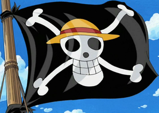
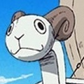
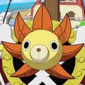

L'Équipage du Chapeau de Paille (麦わらの一味, Mugiwara no Ichimi) est un équipage pirate originaire d'East Blue, bien que leurs membres proviennent de différentes régions. Ils sont l'accent principal et les protagonistes de l'anime et du manga One Piece, et sont dirigés par le protagoniste principal, Monkey D. Luffy. Les "Chapeau de Paille" se nomment ainsi d'après le Chapeau de Paille de Luffy, qui lui fut donné par Shanks le Roux, et sont d'abord appelés "Pirates au Chapeau de Paille" par Smoker à Alabasta.[6] L'équipage naviguait sur le Vogue Merry, leur premier navire d'équipage pirate, jusqu'à l' Arc Water Seven. Après l'Arc Enies Lobby, ils reçurent un nouveau navire, le Thousand Sunny. L'équipage est composé actuellement de 10 membres
L'Équipage du Chapeau de
Paille |
|---|
|  |
| Nom Japonais : 麦わらの一味 |
| Nom Romanisé : Mugiwara no Ichimi |
| Nom Français : L'Équipage du Chapeau de Paille |
| Capitaine : Monkey D. Luffy |
| Navire Principal : Vogue Merry (ancien)Thousand Sunny (actuel) |
Prime Totale :  3.161.000.100 3.161.000.100 |
Capitaine |
|---|
 luffy luffy |
membre |
|---|
 zoro zoro |
 nami nami |
 usopp usopp |
 sanji sanji |
 chopper chopper |
 nico robin nico robin |
 franky franky |
 brook brook |
 jinbe jinbe |
Navires de l'équipage |
|---|
| merry(ancien) sunny(actuel) |